한국누가회(한국누가회) 전국학사수련회 · 2026.8.13(목)~15(토) · 블룸비스타(경기 양평) · 수련회 주제 「함께, 예수님의 마음으로」 · 대회장 백인기 회장 주강사 말씀 시리즈는 서성용 목사(천안 구성교회)의 「그리스도를 위한 특권」 — 빌립보서 1·2·3장을 사흘에 걸쳐 강해한다(4장은 "숙제"). 청·장년 트랙과 별도로 청소년 트랙("Come Back Home!", 눅 15:11-32)·키즈 트랙("체인지 업!", 성지순례 형식)이 병행됐다. 각 세션은 유튜브 생중계 전사와 강사 제공 자료를 바탕으로 한 편씩 정리했다.
전체 세션 한눈에 보기
페이지 열의 링크를 누르면 그 세션의 정리 글이 열립니다.
| # | 세션 | 강사 | 본문 | 페이지 |
|---|---|---|---|---|
| 1 | 개회예배 「나의 자랑, 나의 기쁨」 (목) | 장현준 대표간사 | 갈 6:14 | 열기 → |
| 2 | 말씀 1 · 고난을 받는 특권 (목 저녁) | 서성용 목사 | 빌 1:12-30 | 열기 → |
| 3 | 간증 설교 「우리는 누구이며 무엇을 위하여 여기에 있는가」 (금 오전) | 이수진 목사 | 시 67편 | 열기 → |
| 4 | ICMDA 세계대회 보고와 간증 (금 오전) | 김소망·조나단·김문영·신전수 | — | 열기 → |
| 5 | 전체특강(1) CMF 역사 (금 오후) | 이경애 누가 | — | 열기 → |
| 6 | 선택특강 1 · 학사학원사역부의 과거, 현재, 미래 | 홍민기 누가 | — | 열기 → |
| 7 | 선택특강 1 · Bridge Spirituality (선교부) | 임선교 누가 | 요 20:21 | 열기 → |
| 8 | 선택특강 2 · 찾아오신 예수님, 찾아가는 누가들 (사회부) | 이충형 누가 | 마 9:35 | 열기 → |
| 9 | 선택특강 2 · 이집트 선교 이야기 | 곽찬양·최노래 선교사 | 사 18:7 | (보안상 비공개) |
| 10 | 말씀 2 · 함께, 예수님의 마음으로 (금 저녁) | 서성용 목사 | 빌 2:1-15 | 열기 → |
| 11 | 전체특강(2) CMF 정신 「우리는 왜 아직 여기 있는가」 (토 아침) | 이상협 누가 | 요 6:66-69 | 열기 → |
| 12 | 말씀 3 (토 아침) | 서성용 목사 | 빌 3장 | (정리 예정) |
그 외 세션: 고 안수현 20주년 추모 영상 · 찬양 간증(고형원 선교사) · 선택특강 청년누가/누가훈련원 트랙 · 세대별 모임 · 삶과 정리·소망의 시간 — 별도 정리 없음.
프로그램 (청·장년 트랙)
| 시간 | 목 (13일) | 금 (14일) | 토 (15일) |
|---|---|---|---|
| 오전 | 수련회장 도착 | 간증 설교(이수진) · ICMDA 보고와 간증 · 삶과 교제 · 찬양 간증 | 전체특강(2) CMF 정신 · 말씀 3 · 삶과 정리 · 소망의 시간 |
| 오후 | 등록 · 인사와 교제 · 개회예배 | 고 안수현 20주년 추모 영상 · 전체특강(1) CMF 역사 · 선택식 특강 1·2 · 세대별 모임 | 아웃팅 & 집으로 |
| 저녁 | 찬양 · 말씀 1 · 기도합주회 · 조별 모임 | 찬양 · 말씀 2 · 기도합주회 · 조별 모임 | — |
섬기는 이들 — 대회장 백인기 회장 · 진행팀장 이초인(중앙 운영위원회 총무) · 의전팀장 김리영 누가 · 찬양팀장 조은섭 누가 · 미디어팀 홍민기 위원장(전북누가회 회장) · 청년 트랙 디렉터 조해원 · 청소년 트랙 전종아·양동익 간사 · 키즈 트랙 김강식 간사, 어린이전도협회, Soli Deo 뮤지컬 · 행정팀 이우진 실장(중앙 행정)·전나리 실장(중앙 재정)
사진으로 보는 수련회
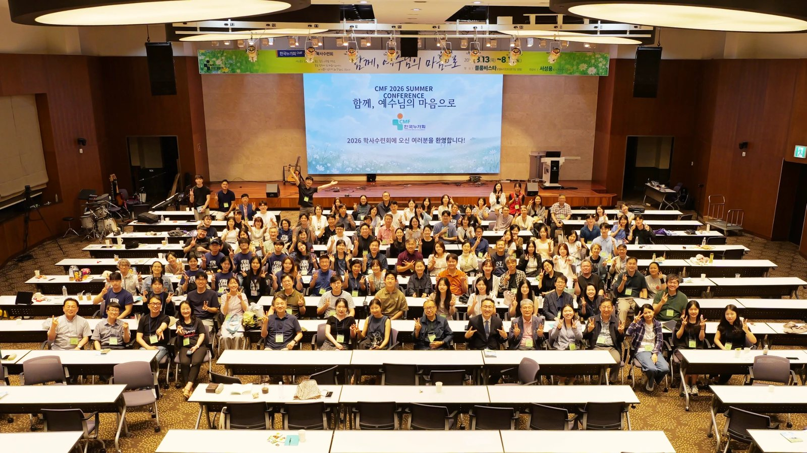
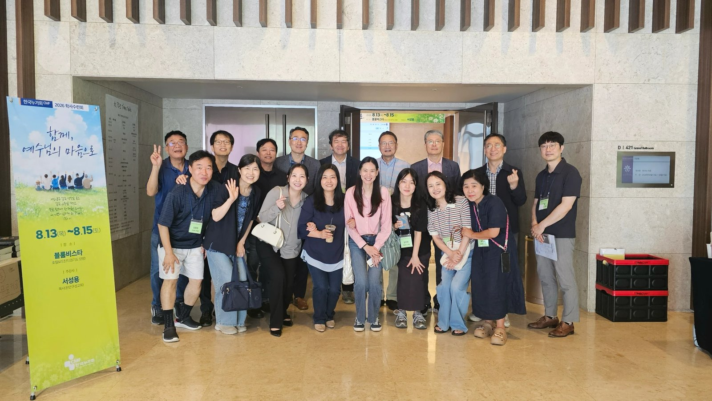
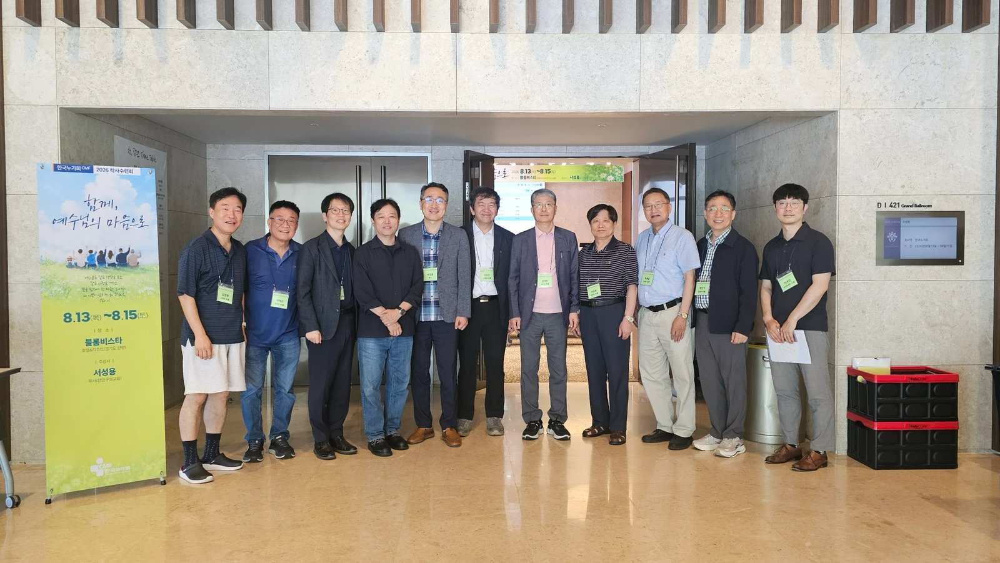
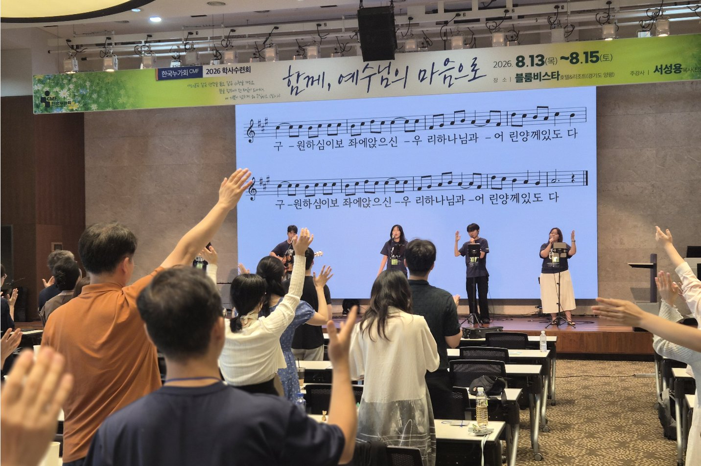
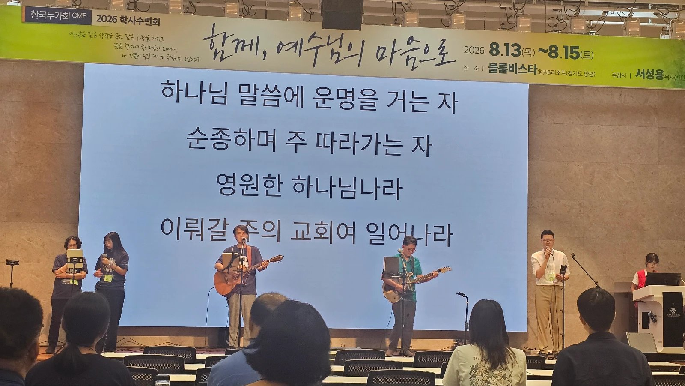
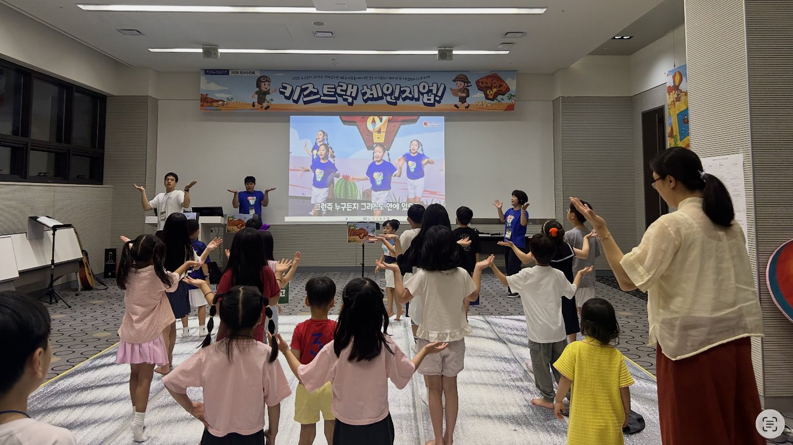
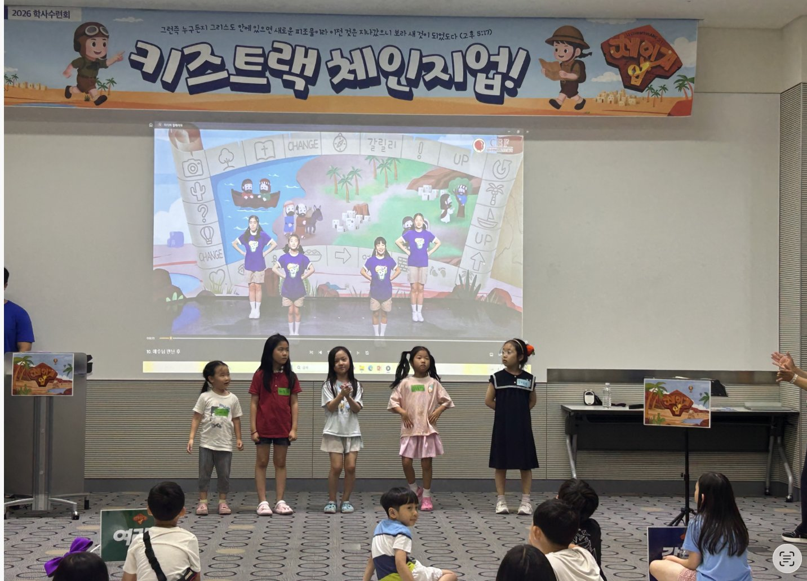
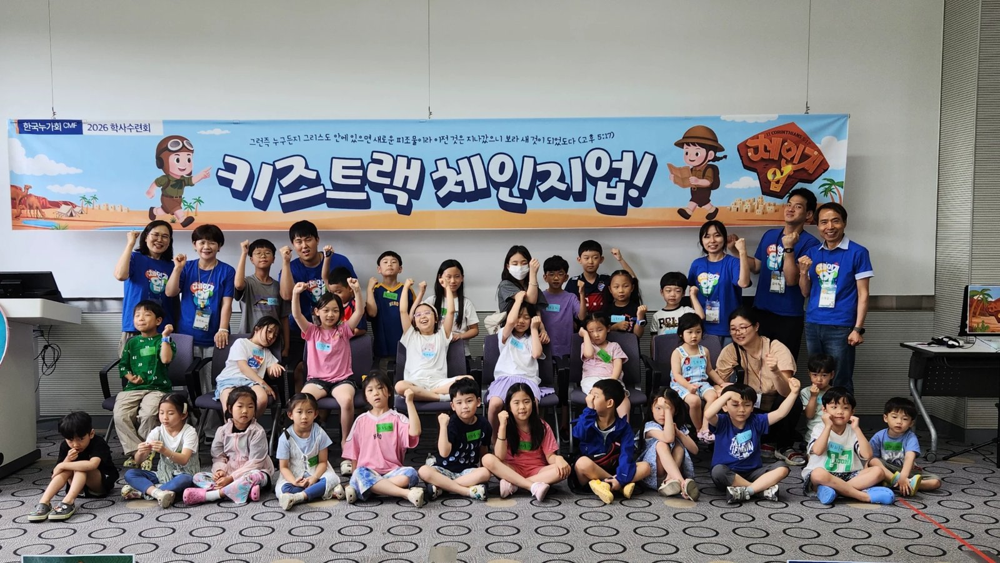
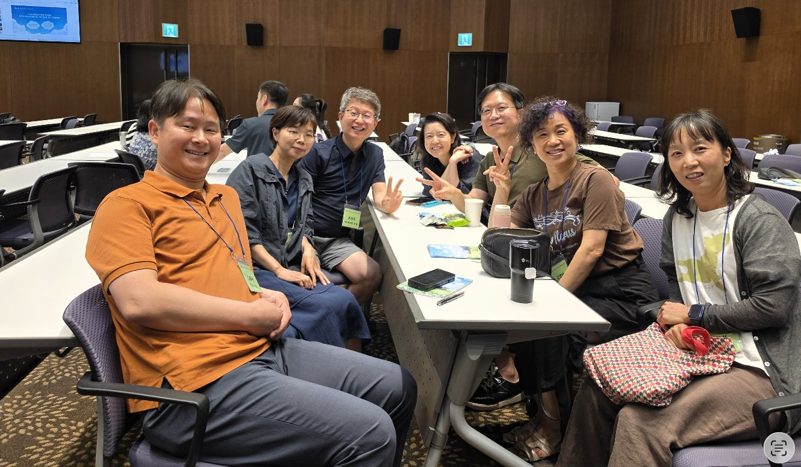
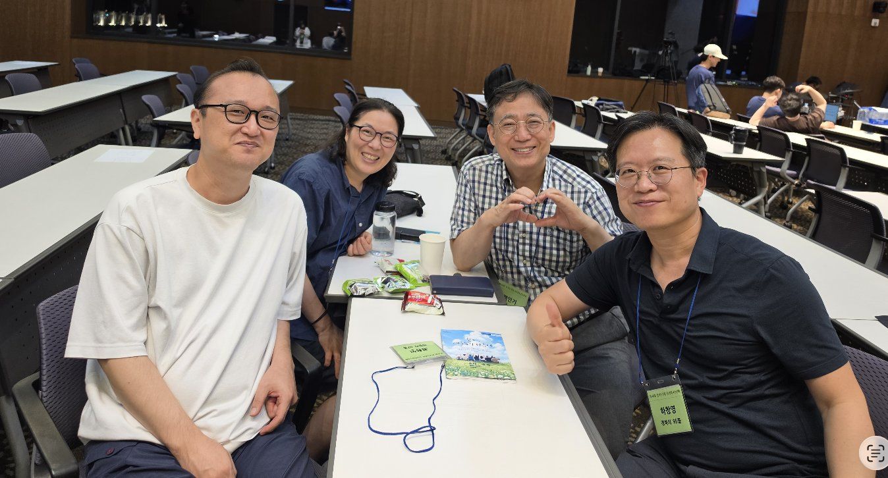
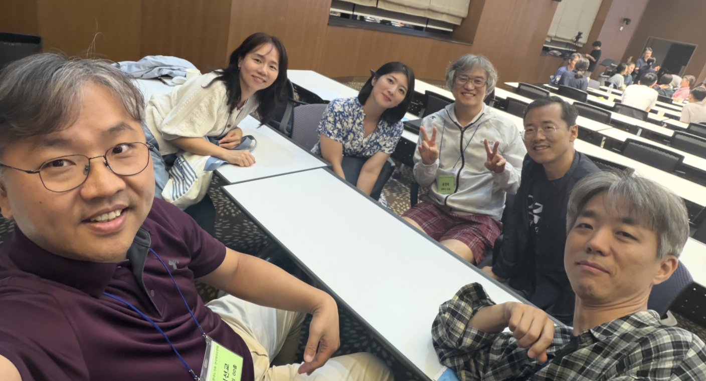
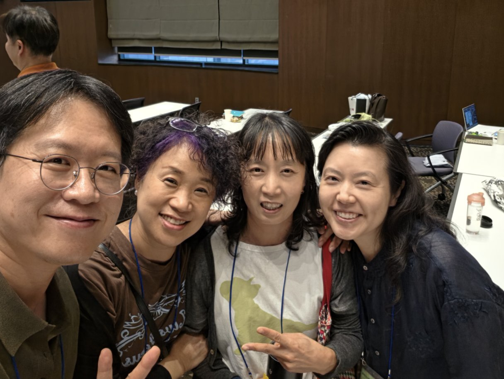
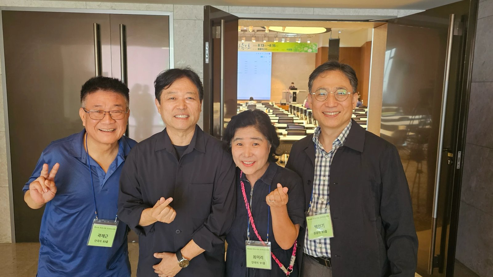
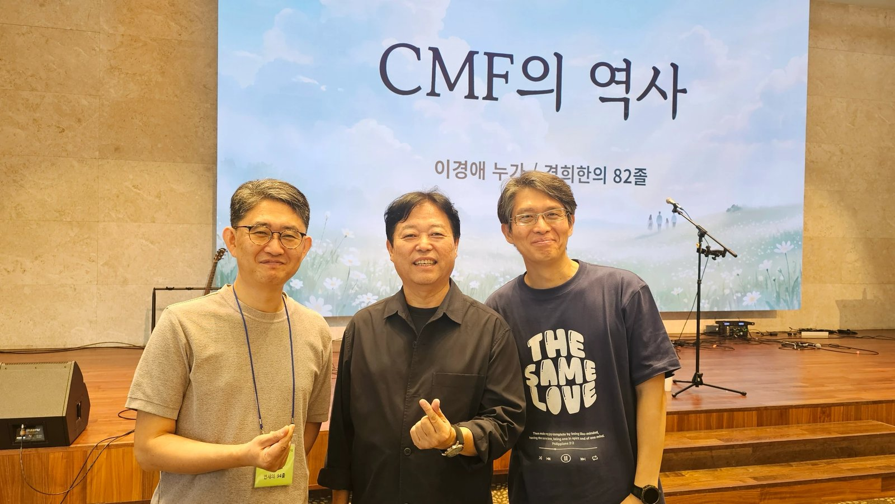
사흘을 관통하는 한 질문
십자가만 자랑하는 사람에게는 그리스도를 위해 고난받는 것 자체가 특권이 된다.
첫날 저녁의 두 설교는 서로 다른 본문에서 같은 방향을 가리킨다. 개회예배(갈 6:14)는 "나는 무엇을 자랑하는가" — 무엇을 붙들고 무엇으로 나를 설명하는가 — 를 물었고, 말씀 1(빌 1:29)은 그 답의 값을 물었다: 십자가만 자랑하는 사람에게는 그리스도를 위해 고난받는 것 자체가 특권이 된다. 자랑의 재정의(갈라디아서)가 특권의 재정의(빌립보서)로 이어지는 구조다.
둘째 날 오전은 그 질문을 정체성의 언어로 옮겼다. 간증 설교의 제목이 "우리는 누구이며 무엇을 위하여 여기에 있는가"였고, ICMDA 보고에서는 원로 발표자가 대회를 치러낸 젊은 세대를 보고 "빨리 넘겨주고 리타이어해야겠다"고 말했다. 오후에는 같은 시간대의 두 방에서 이경애의 역사 증언과 홍민기의 재정 분석이 사전 조율 없이 같은 결론 — 투명성·절차·세대 이양 — 에 도달했고, 임선교의 브릿지 영성과 이충형의 재택의료는 "잇는 사람"과 "찾아가는 사람"이라는 두 소명의 그림을 놓았다. 저녁의 말씀 2(빌 2장)는 특권의 언어를 자기비움의 언어로 옮겼다 — 하강 궤적의 첫 계단이 "특권을 기득권으로 여기지 않으심"이다.
사흘이 한 질문의 세 겹이 된다.
이 판 위에 셋째 날 아침 전체특강(2) 「CMF 정신」이 놓인다 — "오래 남아 있었다는 사실이 가치를 공유한다는 증거는 아니다." 무엇을 자랑하는가 → 그 자랑의 값을 치를 수 있는가 → 그래서 우리는 왜 아직 여기 있는가로 읽으면, 사흘이 한 질문의 세 겹이 된다. 특강 2는 마지막 문장("남아 있음이 의무가 되면 율법입니다. 남아 있음이 기쁨일 때만 정신입니다")으로 곧바로 이어지는 말씀 3(빌 3장)에 다리를 놓는다.
관련 기록
- 시편, 예수님과 교회의 노래로 읽다 — 제94회 CMF 전국학생수련회 — 한 달 전 전국학생수련회(광주). 장현준 대표간사가 EBS 저녁집회 4회를 맡았다.
원본
📖 원본: 수련회 유튜브 생중계 영상 전사 + 강사 제공 설교·강의 슬라이드. 프로그램·강사 정보: 수련회 공식 안내 페이지.